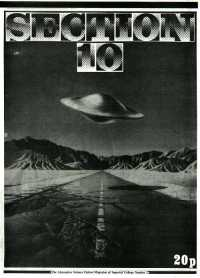

A long, long time ago, in a basement far, far away...
1976-77
According to the large red book this is when the society was founded.
Shown in the cinema were Star Trek, Invasion of the Body Snatchers, Barbarella, Doppleganger, and Dr Who and the Daleks.
1977-78
Logan's Run, Westworld, The Time Machine, Alphaville and The Boy with Green Hair were all shown in the cinema.
1978-79
Shown in the cinema this year were Demon Seed and Andromeda Strain.
1979-80
Project X, Barbarella and No Blade of Grass were shown in the cinema.
Kenn Mann says the following of the 1979-1982 era -
"As you know college societies go through their ups and downs, periodically
undergoing a renaissance as a bunch of enthusiasts join. The 79-80 academic
year was one such, hence Jonathan Flint's name going on the pot. Somewhere
between the years 80 and 82 the society successfully invited various authors
to give talks at the college. My dodgy memory vaguely remembers the late
John Sladek being one of them."
1980-81
| ChairEntity | Jonathan Flint (the list on the pot starts) |
| Treasurer | Mark Jeffcock |
| Librarian | Andrew Bradbrook |
| Secretary | Elise Pechersky |
| Projectionist | Denise Howe |
| Publicity Off. | Ken Mann |
| First Year Rep | Graham Woodhouse |
| Second Year Rep | John Chamberlain |
| Third Year Rep | Michael Price |
Films included Flesh Gordon, Rollerball, Quintet, Fahrenheit 451. Santa Claus
Conquers the Martians (!?), Hardware Wars, and The Rocky Horror Picture Show.
The society attended a lot of BSFA meetings, went to a number of conventions and
obtained 60 more books for the library, bringing it to a total of 250 books.
See the Annual Report
Some comments from Steve Barnett (Chair 82/83) on this year:
"I was president in 1982/3 - in my first
year as a postgrad. Previously, I had been one of a small group
who, as undergrads, basically got the society up and running.
This group included Jonathon Flint (president), Elise Mann (ne Perchersky)
(founding editor of our fanzine "NME")
Ken Mann (secretary I think), Denis Howe (projectionist and scape goat),
Mark Jeffcock, Andrew Bradbrook (librarian), John Chamberlain,
Neil Hampton ..."
1981-82
| ChairEntity | Graham Woodhouse |
| Chair of Vice | ? |
| Treasurer | Tim Fern |
| Librarian | ? |
| Secretary | ? |
| Fanzine Editor | Elise Pechersky |
| ScapeGoat | Brian Haunton |
| Publicity Off. | Guy Riddihough |
| Also | K.C. Mann, J.C. Reynolds, D. Howe, Jonathan Flint, R.L.Fair, Stephen Barnett, M. Jeffcock, Pieter Stucc, COSSAR |
NME 3 was published this year and many films were shown in the Cinema - 2001, Bedazzled, Time After Time, Plan 9, Relativity, Big Bus, Carrie, Night of the Lepus, Scanners, Rocky Horror Picture Show, Wizard, Alien and Invasion of the Body Snatchers.
Trips were organised to see
American Werewolf [in London?], Heavy Metal, Shock Treatment and The Wild
Women of Wonga (!?)
There were also a couple of talks, one from Barrington J. Bayley on his theory
of the separation of the planets and one by Chris Priest on what makes S.F. See
the Annual Report.
1982-83
Chair - Steve Barnett
Films included Lord of the Rings, Dr Strangelove, Shock Treatment, Scanners, Nude Bomb, Wizards and O Lucky Man.
The annual report from the preceding year gives the incoming committee as:
Chairman: Mark Jeffcock, Secretary: K. C. Mann, Treasurer: Tim Fern, Publicity Officer: Guy Riddihough, Librarian: Brian Haunton, Projectionist: Paul Griffin, Scapegoat (incorporating Dogsbody): K. Fearnley.
Considering that Steve Barnett is down on the pot(?) as Chair, how many of this
list survived through to the next year is an exercise left to the reader.
1983-84
Chair - N D Martin. Active members included Paul Griffin, Eoin McDonnell (Secretary), La Iatrou and Steve Barnett.
This year saw the first official Pico-Con with guests Dave Langford and John Cowrie and a showing of Thunderbird 6.
Shown in the cinema this year were Adventure in Perception, Sleeper, Fla[e?]sh Gordon, Barbarella, Altered States and Bladerunner. See the Annual Report and also this item from the Union Archives
Section 10, the Alternative Science Fiction Magazine of IC is released this year, as is NME 5
(Or possibly 4 - The Annual report mentions N.M.E. 4, but Section 10 talks about
NME's 5th year). Section 10 was edited by Guy Riddihough and featured contributions from G.T.R, Svedburg Steve, Molecular Nike and Kate.
1984-85
| ChairEntity | Aiden Jennery |
| Chair of Vice | ? |
| Treasurer | ? |
| Librarian | Rose Horley |
| Secretary | ? |
| Fanzine Editor | ? |
| ScapeGoat | ? |
| Publicity Off. | ? |
| Also | ? |
Chair - Aiden Jennery. The committee featured Phil Hands, James Hawkins and Jonathan Coupe.
The guests at Picocon Pi were Dave Langford and Gerry Webb
The Rocky Horror Picture Show, Excalibur and Escape from NY were shown this year.
| Contents | Next Page |